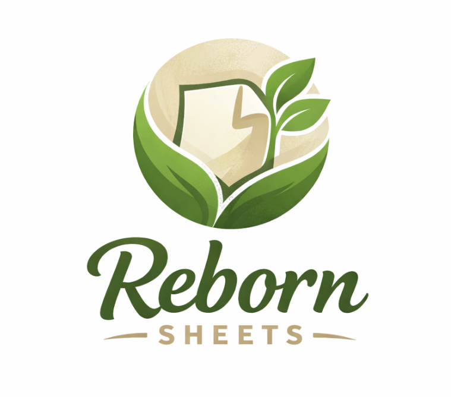

The Heart of Reborn Sheets
Kertas bekas warna krem yang awalnya dianggap tidak terpakai, ternyata bisa "hidup lagi" menjadi sesuatu yang berguna. Kami percaya bahwa setiap lembar kertas memiliki potensi untuk dimulai kembali.
Melalui proses daur ulang yang teliti, kami mengubah sesuatu yang dianggap "mati" menjadi produk yang bernilai dan bermanfaat bagi lingkungan.
Reborn Sheets hadir untuk mengubah cara pandang: bahwa limbah bukan akhir, melainkan awal dari kehidupan baru.

Logo Reborn Sheets — Dari yang sederhana, tumbuh kehidupan baru
Warna krem pada logo merepresentasikan kertas bekas yang awalnya dianggap tidak berguna. Tapi melalui proses daur ulang, ia bisa "hidup lagi" menjadi sesuatu yang bernilai dan bermanfaat.
Daun hijau yang tumbuh di tengah logo adalah simbol bahwa dari hal yang sederhana dan terabaikan, bisa muncul kehidupan baru. Seperti benih yang tumbuh menjadi tanaman, kertas bekas pun bisa memberi manfaat.
Lingkaran pada logo menunjukan bahwa proses daur ulang itu terus berjalan dan tidak pernah berhenti. Dari limbah menjadi produk, lalu bisa didaur ulang lagi — sebuah siklus yang berkelanjutan.
"Dari hal kecil yang terabaikan, bisa tumbuh sesuatu yang besar dan bermanfaat bagi lingkungan."
— REBORN SHEETS —